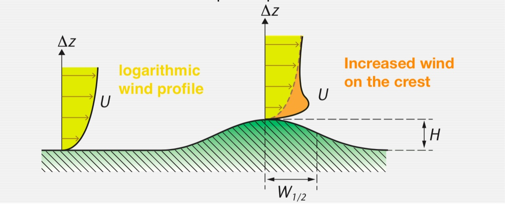

Explain what happens to the wind profile if we introduce horizontal changes in surface properties
Moisture, roughness, topograpny, etc.
Describe how horizontal changes in surface properties affect the surface energy balance partitioning.
1-D View of Surface Layer
It has been implicit in all derivations to this point that the surface layer of the ABL is a ‘constant flux layer’:
Flux densities do not vary horizontally.
Flux densities do not vary vertically.
This allowed us to assume that flux densities measurements made anywhere in the surface layer represented the surface value.
Variability over ‘ideal’ Surface
Observations with eddy covariance show:
Even over ‘ideal’ flat, homogeneous and extensive sites, horizontal and vertical variability of \(\tau\), \(H\), \(LE\) etc. is in the order of 5 to 10%.
Instruments within 50m horizontal distance (EBEX-2000)
Heterogeneous Surfaces
The real world is not made of ‘infinite, homogeneous, plains’. It is a patchwork of different surfaces each with its own energy balance, roughness etc. Hence microclimates at the surface vary greatly, sometimes sharply, and often they are uneven, patchy, rolling etc.
The complex surface
This is the geographical challenge of boundary layer climatology - a 3D reality.
Tile-approach
Used in weather forecasting; we calculate the exchange of different patches separately and then average them by factional occurrence
Why the tile approach might not work
Changing Roughness Effects Wind? (iClicker)
How does mean wind \(u\) near the surfac echange for a transition from a smooth to a rough patch?
Changing Roughness & Reynolds Stress? (iClicker)
How does Reynolds stress (\(\tau\)) change for a transitionfrom a smooth to a rough patch?
We Conclude
Mean wind will be slowed once it encounters and increase in surface roughness
But slowing does not happen immediately (inertia)
Reynolds stress \(\tau\) is strongest where mean wind and roughness are high (at the boundary)
Reynolds stress is ‘overshooting’ and readjusts afterwards to its new value
Relevance of step-changes in landscapes
Internal boundary layer
As air crosses a sharp change in surface properties (\(z_0\), \(T_0\), \(\rho_{v0}\), etc.); air immediately above is affected (due to turbulent exchange).
Modification affects a layer (\(\delta\)) known as the internal boundary layer as a function of greater distances (\(x\)) known as fetch)
Wind Profile Across a Step Change
Changes in Evaporation
Vapor density increases gradually after the step change; Evapotranspiration ‘overcorrects’, spiking then decreasing to new baselevel
Changes in the surface energy balance
Changes in the surface energy balance
Oasis Effect
Advectively driven \(LE\) due to a wet patch within a larger dry environment (desert oasis, urban park, irrigated field).
Contributes sensible heat to boost \(LE\). In some cases \(LE\) can be 1.5 to 2 times \(R_n\).
‘Clothesline’ Effect
Photo: A. Christen
‘Clothesline’ Effect
Advective effects of drier air penetrating a vegetation canopy. Especially seen at crop and forest edges.
Analogy of the drying effect of air through a clothesline of wet laundry.
Enhanced \(LE\) of edge plants often causes them to be stunted, open to disease, and soil moisture is drawn down.
Orographic Effects
Dynamic effects of orography require a larger-scale pressure gradient.
Mountains and hills block, deflect, channel and accelerate pre-existing airflow.
Controlled by the dimension and form of the orographic obstacle and the atmospheric conditions.
Airflow across BC coast mountains (Photo: A.Christen)
Wind in complex terrain
Airflow past an orographic obstacle depends on three properties:
Froude Number (Fr)
The Froude Number describes the ratio of inertia forces to gravitational forces in a system:
\[
Fr = \frac{\pi U_0}{NH}
\qquad(1)\]
where \(U_0\) is the veloity of the approaching flow, H is the height of the obstacle and N is:
\[
N = \sqrt{\frac{g}{\theta}\frac{\Delta\theta}{\Delta z}}
\qquad(2)\]
where \(g\) is the gravitational constant 9.8 m s-2 and \(\theta\) is the potential temperature.
Froude Number (Fr)
We can use the Froude Number to determine whether air flows around or across an orographic obstacle:
The more stable the atmosphere \(\rightarrow\) the greater the resistance to orographic uplift
Lee rotor clouds in Boulder, Colorado, USA
What Happens in a an Unstable Atmosphere?
In an unstable atmosphere, the \(Fr\) is undefined; any obstacle will cause air to flow completely across and streamlines are displaced upwards:
Summary
Wind around the a hill: velocity increases along base of hill.
Wind over the hill: velocity increases on top of the hill.
Table 1: Froude Number’s effect on wind
Fr
Dominant term
Stability
Wind strenght
Result
Fr \(\approx\) 0
\(\leftrightarrow\)
very stable
weak
Wind around obstacle
Fr \(\approx\) 0.5
\(\leftrightarrow\)\(\updownarrow\)
stable
moderate
Wind around and over obstacle
Fr \(>1\)
\(\updownarrow\)
neutral
strong
Wind over obstacle
Fr \(= \infty\)
\(\updownarrow\)
unstable
weak to moderate
Wind over obstacle
Wind profile in complex orography
The vertical wind profile is modified in a way, so that near-surface horizontal winds over the hill are 1 to 3 times stronger compared to the situation over the flat plane upwind:

Flow Separation
Implications on air pollution
Problems of pollution dispersion on the windward slope of a steep-sided valley:
The plume contents are trapped in the lee eddy or forced to ground by ‘downwash’
Thermo-topographic flows
Complex terrain causes unequal distribution of radiation on slopes. Warming and cooling rates of the near-surface air depend on terrain location (ridges, slopes, valley floor).
Valley floor is in shadow, while slopes receive irradiance (Photo: A. Christen)
Thermo-topographic flows
This creates horizontal temperature gradients and consequently pressure differences - along the valley’s axis and along slopes - that are the causation for two well known local thermo-topographic wind circulations:
Cross-valley circulations - circulations perpendicular a valley axis.
Along-valley circulations - circulations along a valley axis.
Anabatic flow
With mostly clear skies and weak synoptic winds (e.g. high-pressure system) anabatic winds are formed:
Slopes are heated by sun.
Warm air rises along slope.
At ridge top, warm air breaks away from the mountain and rises vertically.
(Stull, 2016)
Anabatic flow
Over the course of a day, cumulus clouds (called ‘ridgetop cumulus’ or ‘anabatic clouds’) can form above the ridge in the updraft.
Formation of ridge top (anabatic) cumulus clouds over the course of a day from early morning (1) to mid afternoon (12) (Photos: A. Christen)
Katabatic flow
Katabatic flows over gently sloped terrain are nearly constant in wind speed and show little turbulence. The maximum wind speed is found just a few meters above the surface.
R. B. Stull, 2015
Katabatic flow
If the slopes are forested, the maximum wind speed can be found in the trunk space of a forest. On steeper slopes, however, more substantial flows are observed, and a large number of smaller circulations can establish.
Bimodal Winds on A Steep Slope
One-second measurements (Christen, 2000)
Valley winds
By day, in mountainous areas, the air at higher elevation warms more rapidly than that down the valley triggering up-slope (anabatic) flow and also up-valley flow. At night the rapidly cooling air on mountains flows down by gravity (katabatic flows) and combines to form mountain winds flowing down the main valley
Take home points
Our one-dimensional approach is limited as the typical geographical distribution of surface properties (roughness, surface temperatures, evaporation) varies greatly, sometimes sharply.
This causes momentum, heat and moisture and the corresponding fluxes to depend not only on the underlying surface, but they show a ‘memory’ of surfaces encountered upwind - advection.
Advection can dominate the energy balances, or even invert the direction of turbulent fluxes - oasis effect and ‘clothesline’ effect.
Dynamically, mountains and hills can block, deflect, channel and accelerate airflow. Thermally, they can cause thermo-topographic circulations.
Whether air flows across or around a hill or obstacle is defined by the Froude Number.
Thermo-topographic flows form along slope and valley axes under fair-weather situations with limited synoptic wind. Anabatic flows are upslope, katabatic flows downhill.